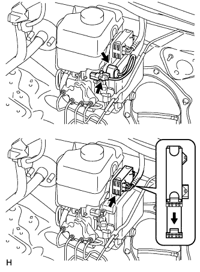
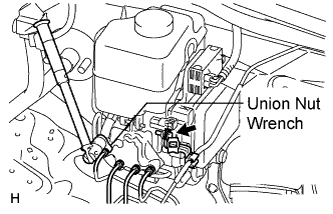

HYDRAULIC BRAKE BOOSTER (for RHD) > REMOVAL |
| 1. DRAIN BRAKE FLUID |
| 2. DISCONNECT CABLE FROM NEGATIVE BATTERY TERMINAL |
| 3. REMOVE FRONT DOOR SCUFF PLATE RH |
| 4. REMOVE NO. 1 INSTRUMENT PANEL UNDER COVER SUB-ASSEMBLY |
 |
Remove the 2 screws.
Detach the 3 claws.
Remove the under cover and disconnect the connectors.
| 5. REMOVE COWL SIDE TRIM BOARD RH |
 |
Remove the cap nut.
Detach the 2 clips and remove the trim board.
| 6. REMOVE LOWER NO. 1 INSTRUMENT PANEL FINISH PANEL |
 |
Using a screwdriver, detach the 2 claws.
Open the hole cover.
 |
Remove the 2 bolts.
Detach the 14 claws.
 |
Detach the 2 claws and remove the sensor.
 |
Detach the 2 claws and disconnect the 2 control cables.
Remove the finish panel and then disconnect the connectors.
| 7. REMOVE DRIVER SIDE KNEE AIRBAG ASSEMBLY |
 |
Remove the 5 bolts and driver side knee airbag.
Disconnect the connector.
| 8. REMOVE PUSH ROD PIN |
 |
Remove the clip and push rod pin from the brake pedal lever.
| 9. REMOVE HYDRAULIC BRAKE BOOSTER ASSEMBLY |
 |
Disconnect the 3 connectors from the hydraulic brake booster.
 |
Use tags or make a memo to identify the place to reconnect.
 |
Using a union nut wrench, disconnect the 4 brake lines from the hydraulic brake booster.
Remove the bolt and disconnect the clamp from the hydraulic brake booster assembly.
 |
Remove the 4 nuts and pull out the hydraulic brake booster assembly.
| 10. REMOVE BRAKE BOOSTER GASKET |
Remove the brake booster gasket from the hydraulic brake booster assembly.